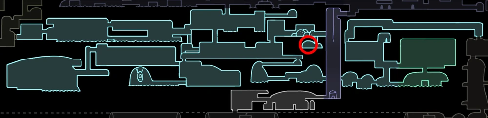
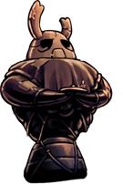
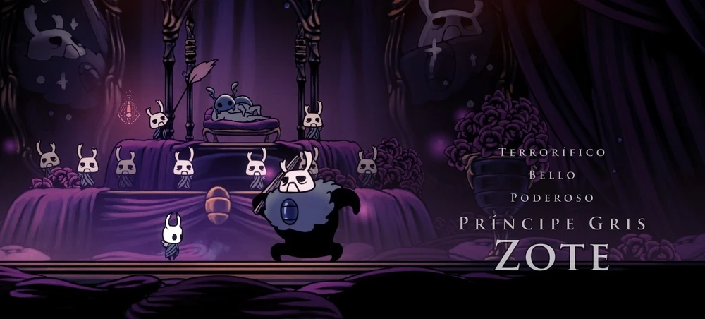

¿Qué es sueños ocultos?
Sueños Ocultos es el primer pack de contenido descargable que salió para Hollow Knight. Se lanzó el 3 de
agosto
de 2017 e incluye nuevas herramientas, como el aguijón onírico, el cual nos permite acceder a la mente
de
los
personajes y ver qué están pensando.
Esto nos permite enterarnos de ciertas cosas que, sin el aguijón onírico, ignoraríamos. Además, también
incluye
dos nuevas batallas de jefe, que son la del Defensor Blanco y la del Príncipe Gris Zote.
PERSONAJES DEL DLC
Defensor Blanco

Es gracioso que te vea hasta en mis sueños pequeñín. Tu porte noble me recuerda
a
nuestro
querido Rey. Cuando el regrese, Le preguntare si puede hacerte caballero! Que grandes aventuras
tendremos...
-El Defensor, tras ser derrotado
El defensor blanco no existe como tal, todo empieza con Ogrim, uno de los antiguos caballeros del
rey
palido.
Despues de la caida del reino, Ogrim se recluyó en los canales reales y se quedo allí
hasta
nuestra
llegada.
Una vez lo derrotemos, podremos acceder a su mente en una sala secreta y una vez lo
consigamos
podremos pelear contra el defensor blanco, que es una version mas joven de Ogrim, cuando aún era uno
de los
caballeros del rey
Principe gris Zote

Amor mío, cualquier criatura que pueda mantenerse lejos de tí, que
voluntariamente
te
deje
atrás o te diga cosas desagradables... ¡Bah! ¡Pobres gusanos, no merecen ni quedarse bajo tu
gloriosa
sombra!
Ella sintió su frío cuerpo calentarse,una sensación que casi había
olvidado...
-El
Principe
Gris, Capitulo 112
El contexto de este es algo largo, si rescatamos a zote en todos los momentos en los que esta en
apuros
por
ser
un inutil, llegara un punto en el que este ira a bocasucia y conocera a una chica llamada
Bretta, la
cual se
enamorará perdidamente de el hasta el punto en el que ella construira una estatua de Zote en el
sotano
de su
casa y escribira un cuento sobre su "Principe Gris".
Si bajamos a este sotano y golpeamos
esa
estatua
con
el aguijon onirico, entraremos a la pelea con el principe gris, una version idealizada de zote
que
existe en
los
sueños de Bretta. Hay que añadir que esta pelea es exageradamente dificil para compensar que
Zote es un
inutil
Herramientas que incluye el DLC
Este DLC incluye dos herramientas nuevas al juego siendo estas el aguijon onirico y el portal onirico
Aguijon Onirico

El aguijon onirico es una herramienta/arma que nos permite cortar el velo que separa el mundo real del de los sueños, para conseguirlo debemos llegar a las tierras de reposo y una vez alli los soñadores intentarán detenernos y evitar que sigamos con nuestra mision y nos sumiran en un sueño eterno. Una vez en el sueño la vidente nos rescatará y nos brindará este arma
Portal onirico

El portal onirico es una de las funciones que el aguijon onirico tiene a parte de leer las
mentes.
Si
utilizamos el portal onirico mientras pulsamos hacia abajo estableceremos el portal y si utilizamos
el
aguijon
onirico mientras pulsamos hacia arriba nos teletransportaremos hacia donde lo hayamos puesto
Galeria de Imagenes

Arena del Defensor Blanco

Ubicacion del Defensor

Estatua de Zote en casa de Bretta

Pelea contra el Principe Gris